Ejercicios de limites
Sea
P.D:
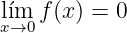
Dem
sea: ϵ > 0, si ||x - 0|| < δ
⇒|f(x) - 0| < ϵ
||x - 0|| = ||x|| = 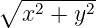 < δ
|x2 + y2| < ϵ
vemos en la imagen que para ϵ podemos tomar una preimagen δ tal que δ = 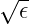,
entonces
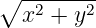 < 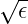
⇒ 0 < ||x|| = < 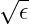
⇒ 0 < ||x||2 = x2 + y2 < ϵ
y como f(x) = x2 + y2
∴|f(x) - 0| < ϵ
Por definici奏on de continuidad tenemos que f(x) = x2 + y2 es continua, por lo que
podemos redefinir la funci奏on como
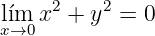
Ahora tenemos la funci奏on
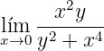
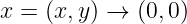
veamos por trayectorias si el limite existe en (0,0).
1.Ejes. x=0 o y=0
si x=0 ⇒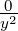 = 0
si y=0 ⇒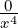 = 0
2.Identidad- x=y
si x=y ⇒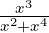 = 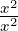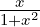 = 
si x → 0 = 0
3.Rectas. y=mx donde m≠0 y 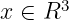
y=mx ⇒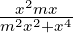 = 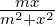
si x → 0 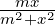 = 0
4.Par姑abolas. y = mx2
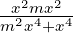 = 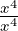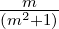 = 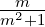
 ≠0
≠0
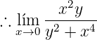 no
existe.
A continuaci奏on podemos observar la grafica de la funci奏on
podemos observar que es una discontinuidad no evitable, ya que hay trayectorias
que se acercan a 0 y otras que se acercan a una infinidad de valores distintos.